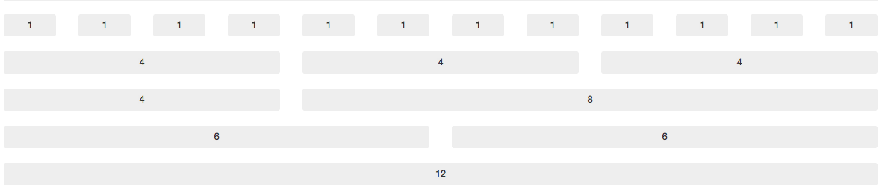
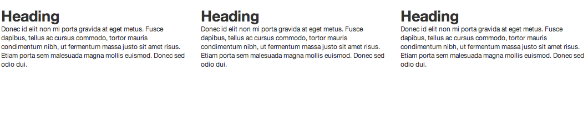
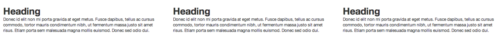
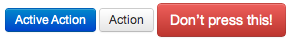
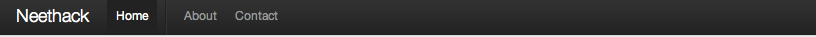
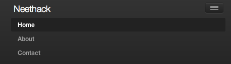
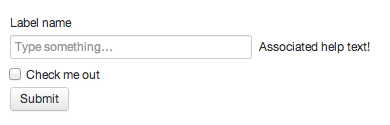
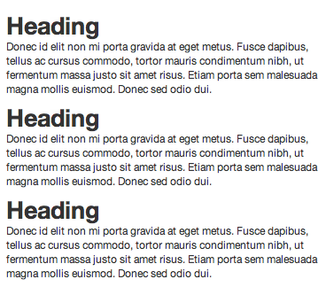

Bootstrap 2.0
Bootstrap , from twitter
Bootstrap, a css framework that developed by Twitter, created by Mark Otto and Jacob Thronton. Which original was the internal framework in twitter for their products and quick prototyping.
On the github page, Bootstrap is described as:
Simple and flexible HTML, CSS, and Javascript for popular user interface components
and interactions.
That is, Bootstrap is not only just a css framework, but actually an UI framework base
on HTML, CSS and Javascripts. It includes the basic css framework that handle details like css reset, typography and grid system. Moreover, it includes the base UI elements like navigation bar, button, form and paginition… and the interaction
UI elements like dropdown, popover and tooltips. Evenmore, all of the color and elements is customizable because the css is generated by less, all setting is in varibles.less file and allow user to change the variables or reuse the elements class in less.
As twitter engineers describe:
In the earlier days of Twitter, engineers used almost any library they were familiar with to meet front-end requirements. Bootstrap began as an answer to the challenges that presented and development quickly accelerated during Twitter’s first Hackweek. In twitter, this framework is widly use among different products as the base UI framework
Bootstrap solves the problem of how to reuse css and UI components. Also it improves the productivity of designer and programmer because it is very easy to use on prototyping new products.
Project Structure
The project is hosted on Github
It includes 3 main parts: less css files, jQuery plugins,
and documents.
docs/ #example and github-page
img/ #css sprite for icons
js/ #jQuery plugins for UI interaction
less/ #main css files
|- ...
|-bootstrap.less #main entry point, includes all other .less file
|-grid.less #setting grid system
|-layouts.less #setting container width
|-mixins.less #mixin functions for clearfix, grid, border, box-shadow and more.
|-reset.less #css reset
|-responsive.less #responsive css, will compile to bootstrap-responsive.css
|-scaffolding.less #basic structural layout
|-type.less #Typography for elements
|-utilities.less #Quick css functions like float:left and display:hide
|-variables.less #All varibales like font, background, grid-width
|-...
Makefile #build script on bootstrap, use lessc to compile all .less file to bootstrap.css
Reset
CSS reset is an important topic to display unify layout among all browsers and devices. It reset the layout by overwriting the different default style on browser.
There are also a lot of reset framework that we can choose beside bootstrap, like YUI reset or Eric Meyer’s Reset
Twitter’s reset is adapted from normalize.css
Grid System
Grid system is a way to simplify the positioning and floating of css, which defines the grid with fixed width, so user can use the grid without setting float and calulating persentages. There are differents grid system like 960gs, YUI Grid or blueprint css. Each have different implementation.
On Bootstrap 2.0, it use the 960px-12column Grid system:

Each grid is 60px width with 20px left-margin, we can easily use the grid in our html file by adding the span* class to elements:
1 |
|
Output:

We can also use the fluid layout to make the layout and grid width become fluid with screen width:
1 |
|

UI Elements
The Bootstrap provide decent style for html elements like button, form and table.
Also, It provide some popular UI elements such as navigation bar, tooltip, popover,
modal…, Here we will just pick some popular UI elements.
Button
1 | <div class="btn btn-primary">Active Action</div> |

Here’s part of the buttons source:
1 |
|
Navigation
Navigation bar is the top menu bar of twitter, we can set it as fixed or non-fixed:
1 |
|

By setting the .nav-collapse class and include bootstrap-collapse.js,
bootstrap-responsive.css, the nav-bar can automatic correspond with mobile device:
1 |
|

Form
Bootstrap enhance the html form components into more decent elements, we can just use original form elements and append the grid class .span* to control the width.
1 | <form> |

Here’s only a few examples of UI elements, check more UI elements on the components page.
Responsive
Responsive design is a big topic recently, since more and more mobile and tablet devices have become the main consumer of web pages.
Bootstrap provide the responsive design by using the media query and grids.
Take a look at the bootstrap-responsive.less file:
1 |
|
This is a small part in responsive.less. As we can see, it use the media query to apply the propriate style for device.
On the device that max-width is under 767px, like LANDSCAPE Phone and PORTRAIT TABLET, container width will be set to auto,
and the span width will be set to full width to display propally on device. For example:
1 |
|
display in desktop device as:
but when the device width is lower than 767px, the span width will become full, the layout will become vertical:

Bootstrap provide that with media query, all UI elements include navigation, form, tab and others is responsive. The user only need to include the bootstrap-responsive.css to apply those feature without designing mobile version of pages.
Compile your own bootstrap
Bootstrap use less to compile the .less file into css.
And all the params is in variables.less file. Therefore we can easily change the color and layout setting and recompile our own version of bootstrap.
First, we need to install the node.js with npm(node package manager)
Using npm to install less.js(you can also install by rubygem, bug less.rb have some bugs on finding .less file on reletive folder)
npm install -g less
Next, install javascript compressor uglify-js by npm
npm install -g uglify-js
After that, we can start to tune on the color and varibles, and pack it with
make bootstrap
We can start to use our own version of bootstrap.css. With bootstrap-responsive.css, bootstrap.min.js
Moreover, you can also start to build your own new css framework from preboot.less includes basic grids and mixins.
Conclusion
Bootstrap is one of the easiest framework to use and integrate. Because it have great project documents and rich examples. Also it is open sourced that we can easily fork and customize on the base of twitter.
For the nearly future, apperently there will be more and more css UI framework that make web development much easier.
Comments